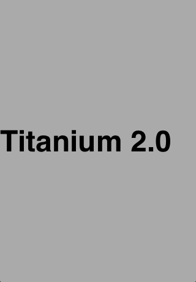
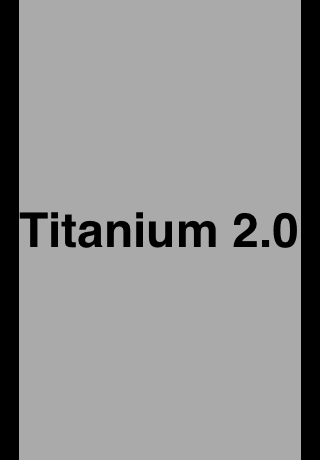
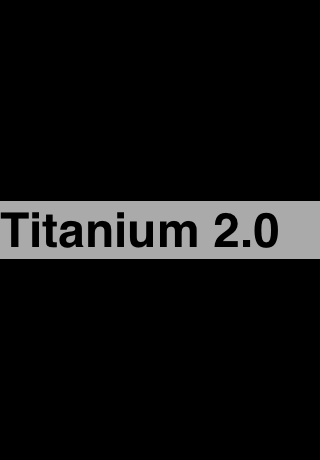
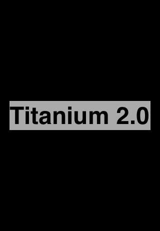

Titanium
2.0 GA

The latest release of the only cross-platform mobile development framework that creates both native and web-based apps.
AGENDA
- What's New in Titanium Mobile 2.0
- Cloud Services
- APIs
- Documentation
- Fixes and Enhancements
- Resources / Q&A
WHATS NEW IN 2.0?
- Updated Layout System
- Appcelerator Cloud Services Support
- Mobile Web Release Candidate
- Modules API
- Android Geolocation Enhancements
Layout System Updates
- Improved handling for auto-sizing of views
- Batch layout updates for improved performance
- Post-layout event generated when layout is complete
View Types & Auto Behavior
2 new constants: Titanium.UI.FILL and Titanium.UI.SIZE to replaces the 'auto' keyword
- Auto Size Views - 'auto' ===
Ti.UI.SIZE - Auto Fill Views - 'auto' ===
Ti.UI.FILL - Auto Fill Width Views - fills available width by default, scales vertically to fit contents
var win = Ti.UI.createWindow();
var label = Ti.UI.createLabel({
text: 'Titanium 2.0',
height: Ti.UI.FILL,
width: Ti.UI.FILL,
backgroundColor: '#aaa',
font: { fontSize: 48, fontWeight: 'bold' }
});
win.add(label);
win.open();
FILL/FILL |
FILL/SIZE |
SIZE/FILL |
SIZE/SIZE |
Auto Size Views
- Specifying 'auto' for either height or width is the same as specifying Ti.UI.SIZE
Button, Label, ImageView, ProgressBar, Switch, TextArea, TextField, Picker, ButtonBar, TableViewSection
Auto Fill Views
- Specifying 'auto' for either height or width is the same as specifying Ti.UI.FILL
View TabGroup VideoPlayer TableView WebView ScrollView ScrollableView
Auto Fill Width Views
- The following views fill the available width by default, and scale vertically to fit their contents.
Slider TableViewRow Toolbar SearchBar- 'auto' specifies FILL behavior when it is used as a width value, and SIZE behavior when it is used as a height value.
Batch Layout Updates
- In previous releases, each update to a layout parameter could trigger a layout cycle.
startLayout()andfinishLayout()place view into deferred layout modeupdateLayout()method allows you to update a set of layout parameters in a single operation.
Batch Layout Code
// Put a view into deferred layout mode.
myView.startLayout();
myView.top = 50;
myView.left = 50;
myView.width = 200;
myView.finishLayout();
// Update multiple layout parameters in a single operation
// Same effect as above
myView.updateLayout({
top : 50,
left : 50,
width : 200
});
// Put a view into deferred layout mode.
myView.startLayout();
myView.top = 50;
myView.left = 50;
myView.width = 200;
myView.finishLayout();
// Update multiple layout parameters in a single operation
// Same effect as above
myView.updateLayout({
top : 50,
left : 50,
width : 200
});
Control Size and Position and postLayout()
//the rect and size properties can be used to determine the
// size and position of the view.
//Note that updating a view's layout in the postlayout()
// event can cause an infinite loop of layout events.
var postLayoutCallback = function(e) {
Ti.API.info(String.format("Layout done, left: %f, width: %f", myView.rect.x, myView.rect.width));
myView.removeEventListener('postlayout', postLayoutCallback);
}
myView.addEventListener('postlayout', postLayoutCallback);
myView.updateLayout({
left: '25%',
width: '25%'
});
//the rect and size properties can be used to determine the
// size and position of the view.
//Note that updating a view's layout in the postlayout()
// event can cause an infinite loop of layout events.
var postLayoutCallback = function(e) {
Ti.API.info(String.format("Layout done, left: %f, width: %f", myView.rect.x, myView.rect.width));
myView.removeEventListener('postlayout', postLayoutCallback);
}
myView.addEventListener('postlayout', postLayoutCallback);
myView.updateLayout({
left: '25%',
width: '25%'
});
Universal Unit Support
All platforms now support specifying units for size and position values. The following table lists the supported units:

APPCELERATOR CLOUD SERVICES (COCOAFISH)
ACS Modules
- Bundled Titanium modules for using ACS
- ACS modules are not part of core. To use the main ACS module, you must import it using
require - Must import
Titanium.Pushmodule to use ACS push notifications on Android - API reference for Titanium.Cloud
- ACS provides a REST API and native SDKs for many platforms. See cloud.appcelerator.com
ACS Module Code
//use ACS module
var Cloud = require('ti.cloud');
//ACS push notifications on Android
var Push = require('ti.push');
tiapp.xml Properties
<property name="acs-api-key-development" type="string">YOUR DEVELOPMENT API KEY HERE</property>
<property name="acs-oauth-key-development" type="string">YOUR DEVELOPMENT OAUTH KEY HERE</property>
<property name="acs-oauth-secret-development" type="string">YOUR DEVELOPMENT OAUTH SECRET HERE</property>
<property name="acs-api-key-production" type="string">YOUR PRODUCTION API KEY HERE</property>
<property name="acs-oauth-key-production" type="string">YOUR PRODUCTION OAUTH KEY HERE</property>
<property name="acs-oauth-secret-production" type="string">YOUR PRODUCTION OAUTH SECRET HERE</property>
<property name="acs-api-key" type="string">YOUR API KEY HERE</property>
<property name="acs-oauth-key" type="string">YOUR OAUTH KEY HERE</property>
<property name="acs-oauth-secret" type="string">YOUR OAUTH SECRET HERE</property><property name="acs-base-url" type="string">API URL HERE</property>
Tiapp Property Value Rules:
- OAuth is preferred over apiKey. If both are provided then OAuth will be used; otherwise, apiKey will be used.
- If a deployment-specific setting is provided (production or development) then that value will be used for the current deployment environment.
Built in ACS Objects
Chat, Checkins, Clients, Emails, PhotoCollections, Photos, Places, Posts, PushNotifications, Reviews, SocialIntegrations, Statuses, Users
For Everything Else
KeyValues, ObjectsKeyValuesare custom key = value stores for ACS dataObjectsare any arbitrary data objects stored in ACS
MOBILE WEB Release Candidate
Mobile Web Status
- Majority of Titanium Mobile API is implemented for Mobile Web.
- Implements a cross-platform subset of the Titanium Mobile APIs, excluding platform-specific and non-browser based APIs
- Certain APIs are subject to limitations due to constraints imposed on running in browser.
- For more information, see Mobile Web Limitations

Not Yet Implemented
- Will be available in a future release
Titanium.Database Titanium.Media.AudioPlayer Titanium.Media.Sound Titanium.Network.Socket Titanium.Network.Socket.TCP Titanium.Stream Titanium.UI.SearchBar Titanium.Locale
Platform Specific UI
- These UI controls are not implemented because they are platform-specific controls that have not yet been moved to a platform-specific namespace
Titanium.UI.ButtonBar Titanium.UI.MaskedImage Titanium.UI.Notification Titanium.UI.3DMatrixTitanium.Contactsis not supported as contact data is not available to apps running in a browser
MODULE APIs
In this release, the native APIs that can be used by native Android and iOS modules have been documented. The module APIs are not integrated into the main documentation site, but you can find them at the following locations:
FIXES & ENHANCEMENTS
Android Enhancements
- Geolocation enhancements. See Android Geolocation Enhancements
- Support for Android SDK Tools, Revision 17.
Android Fixes
- Support for background image tiling on a view
- Improved handling of local URLs inside WebView
- Fixed a web view crash that occurred when handling the back button (TIMOB-7695)
- Resolved a crash when reusing a web view on an activity window. (TIMOB-8267)
- Improved open event handling for tabs. (TIMOB-8192)
iOS Enhancements
- Upgraded the iOS JavaScript engine, JSCore, to the version shipping with iOS 5.0
- Added support for Xcode 4.3 and iOS 5.1
- Added support for the iPad 2012
- Improved CommonJS module encoding
- Newsstand content notifications (TIMOB-5910)
iOS Fixes
- Fixed "suspend" and "resume" behavior (TIMOB-4538)
- Several App verification fixes
(TIMOB-6575, TIMOB-7674) - Fixed numerous crashes. (TIMOB-8105, TIMOB-8102, TIMOB-8081, TIMOB-7334)
- Fixed memory leaks and garbage collection issues
(TIMOB-7644, TIMOB-7642, TIMOB-7467, TIMOB-6463) - HTTP client support for Shift_JIS, EUC-JP encodings
(TIMOB-6835)
RESOURCES / Q&A